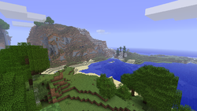

Beta was the sixth and the final development phase that succeeded Alpha and preceded the full release of Java Edition, and was the fifth and final Minecraft development stage to have some of its versions released to the public. It was announced on Notch's blog on December 11, 2010 and released nine days later, on December 20, 2010. As well as some minor updates, the transition from Alpha saw a 50% price increase (therefore making the cost 25% off the full price), a change in the disclaimer (Notch removed the line that said "all future updates will be provided free of charge", though the statement still applies to users who bought Minecraft before Beta was released. Both Alpha and Beta buyers got the full game free of charge) and minor updates to the main website.
 Back